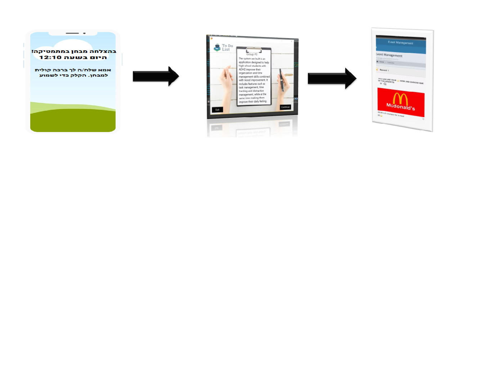
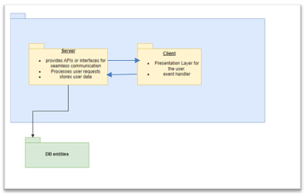

Our product is designed to help high school students with attention deficit hyperactivity disorder (ADHD) to improve their time management skills combined with improving feeling and motivation.
It includes features such as task management, and at the same time make them improve their daily feeling through various features in the system to increase motivation and as a result,
lead to an improvement in their effectiveness.
Attention Deficit Hyperactivity Disorder (ADHD) is a neurological disorder that affects attention, focus, and behavior.
It can make it difficult to complete tasks and stay organized.
Understanding the symptoms and causes of ADHD is the
first step in developing effective strategies for managing it.
The product is intended for high school students (ages 16-18) with attention and concentration problems. Additionally, it can also be used by middle school students in special education systems. The application links the student's parents and teachers for the purpose of improving the student's mood and getting a response for progress at each stage. However, it is important to note that the system does not handle diagnosis or medical advice.
The product is designed to provide task management and scheduling skills to students. It allows users to create assignments, track their progress, and receive notifications from users defined as parents or teachers based on required completion of assignments. The system incorporates a point-based reward system to motivate students to complete assignments on time and successfully and efficiently.
➔Task - In addition to the accepted interpretation, this term will also describe the part where the student can send feedback about his feelings.
➔Users - There can be students as we mentioned, and also parents and teachers as supporting users.
➔Emotional oriented - Contains technical solutions designed to improve the student's feelings and motivation.
▶️The system will allow users to create tasks and rate their priority.
▶️The system will allow the user to mark completed tasks and determine a feeling after completion.
▶️The system will allow sharing the feeling with a teacher or parent.
▶️The system will allow the student to send a request for help in completing a task.
▶️The system will allow a teacher or parent user to send messages to student users.
▶️The system will present a student-type user with a motivational statement before performing a task.
▶️The system will allow the teacher to send a reward to the student.
▶️The system will allow the student to view the amount of rewards he has accumulated.
Main Conclusions:
▶️Most of the students lack specific time management applications.
▶️The student hesitates to ask for help from family and teacher, for several different reasons.
▶️Feedback and motivation can be essential for individuals with attention and concentration issues.
▶️A time management application could assist students in managing their time effectively and improving their mood.
▶️Rewards and incentives for meeting goals can enhance motivation.
In addition, from the questionnaire we published to the target audience, we received some interesting findings:
As we can see, more than half of the students stated that their time management ability today is average or below.
An almost complete majority of those answering the questionnaire reported that a reward for managing the tasks would stimulate additional motivation.
Our initial architecture model (high level):
Usability - The system interface should be visually clear, through clear instructions and appropriate hints that will allow the users of our system improved usability.
Performance - The system should respond quickly to the user's commands and load essential and complete information for the user.
Reliability - The system should be accessible to the user as consistently as possible and minimize recovery times as much as possible.
At the stage of presenting the prototype, we received repeated comments\n from the lecturer and classmates to transfer the application to mobile, or a\n web application. As a result, we decided to implement the comment for\n several reasons:
✈️ The accessibility of a mobile application versus a personal computer can be decisive, especially among teenagers.
✈️Prevention of technical debt that may arise in the future in the development of the system.
✈️provide friendly and convenient solutions for product users.
Here are the main challenges we faced while working on the product:
üöÄ Tight scheduling, understanding the expected requirements and implementing them. For example, the mobile application development after the prototype presentation led us to additional tasks in the schedule to meet the required goal.
üöÄ Lack of experience in developing a network application, learning the existing tools, programming languages, useful APIs, and integration.
üöÄ Locating relevant students to fill out questionnaires, interviews, or feedback for the product we developed.
üöÄDynamic change of the requirements and decision-making following the findings we received.
▶️ Add statistics for Teacher type user that combine between the feeling feedback about task/s and grades.
It's may help to Automatic scoring calculation
▶️Add Motivation and Tips befeore test that will be fit to the student choises
▶️ Add more noval feature in order to increase usage and attarct more audience.